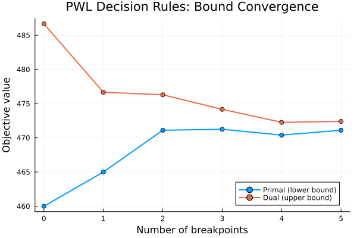
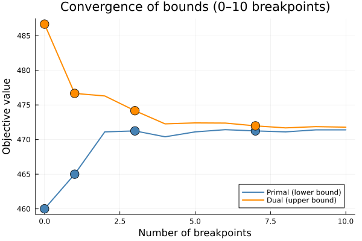
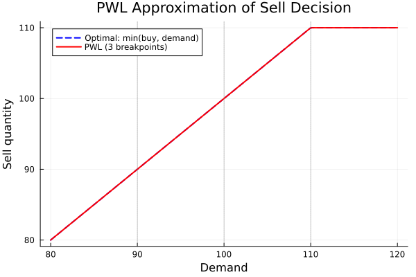
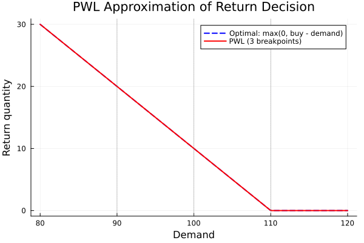
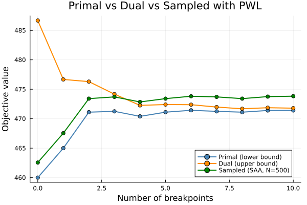

Piecewise linear decision rules
This tutorial introduces piecewise linear decision rules (PWL). If we generalize the linear decision rule to a piecewise linear decision rule, we can get a better approximation of the optimal decision rule.
We build on the Newsvendor problem from the Getting started with LinearDecisionRules tutorial. For the full mathematical details, see the Piecewise linear extensions section of the manual.
Why piecewise linear?
Standard linear decision rules approximate second-stage decisions as affine functions of the uncertainty $\eta$:
\[x(\eta) = x_0 + x_1 \eta\]
However, many optimal policies are piecewise linear in practice. For example, in the Newsvendor problem, the optimal sell quantity is:
\[\text{sell}(\text{demand}) = \min(\text{buy}, \text{demand})\]
which has a kink at demand = buy.
Breakpoints and lifted variables
To capture piecewise linear policies, we introduce breakpoints $\eta_0 = \eta_{\min} < \eta_1 < \dots < \eta_k = \eta_{\max}$ that partition the uncertainty domain into segments.
The uncertainty $\eta$ is then represented as a sum of lifted variables:
\[\eta = \tilde{\eta}_1 + \tilde{\eta}_2 + \dots + \tilde{\eta}_k\]
where each $\tilde{\eta}_i$ is the contribution of $\eta$ from the $i$-th segment:
\[\tilde{\eta}_i = \begin{cases} \min(\eta, \eta_1) & i = 1 \\ \max\!\left(0,\, \min\!\left(\eta - \eta_{i-1},\, \eta_i - \eta_{i-1}\right)\right) & i \geq 2 \end{cases}\]
The first lifted variable satisfies $\eta_{\min} \leq \tilde{\eta}_1 \leq \eta_1$, while $0 \leq \tilde{\eta}_i \leq \eta_i - \eta_{i-1}$ for $i \geq 2$.
The decision rule becomes a linear function of these lifted variables:
\[x(\eta) = \tilde{X} \tilde{\xi}\]
where $\tilde{\xi} = [1; \tilde{\eta}]$. This allows different slopes in each segment, enabling piecewise linear behavior.
Setup
using JuMP
import LinearDecisionRules
import HiGHS
import Distributions
import PlotsThe Newsvendor problem (recap)
We use the same problem as in the getting started tutorial:
- Buy cost: $10 per unit
- Sell price: $15 per unit
- Return value: $8 per unit
- Demand: uniformly distributed between 80 and 120 units
buy_cost = 10
sell_value = 15
return_value = 8
demand_min = 80
demand_max = 120120Part 1: Adding a single breakpoint
First, let's solve the problem without breakpoints (standard LDR):
function solve_newsvendor(; n_breakpoints = 0)
ldr = LinearDecisionRules.LDRModel(HiGHS.Optimizer)
set_silent(ldr)
@variable(ldr, buy >= 0, LinearDecisionRules.FirstStage)
@variable(ldr, sell >= 0)
@variable(ldr, ret >= 0)
@variable(
ldr,
demand in LinearDecisionRules.Uncertainty(;
distribution = Distributions.Uniform(demand_min, demand_max),
)
)
@constraint(ldr, sell + ret <= buy)
@constraint(ldr, sell <= demand)
@objective(
ldr,
Max,
-buy_cost * buy + return_value * ret + sell_value * sell
)
# Set breakpoints if requested
if n_breakpoints > 0
set_attribute(demand, LinearDecisionRules.BreakPoints(), n_breakpoints)
end
optimize!(ldr)
return (
primal = objective_value(ldr),
dual = objective_value(ldr; dual = true),
model = ldr,
demand = demand,
buy = buy,
sell = sell,
ret = ret,
)
endsolve_newsvendor (generic function with 1 method)Solve without breakpoints:
result_0bp = solve_newsvendor(; n_breakpoints = 0)
println("No breakpoints:")
println(" Primal bound: ", result_0bp.primal)
println(" Dual bound: ", result_0bp.dual)
println(" Gap: ", result_0bp.dual - result_0bp.primal)No breakpoints:
Primal bound: 460.0
Dual bound: 486.6666666666665
Gap: 26.666666666666515Now solve with 1 breakpoint (which creates 2 linear pieces):
result_1bp = solve_newsvendor(; n_breakpoints = 1)
println("\n1 breakpoint (2 pieces):")
println(" Primal bound: ", result_1bp.primal)
println(" Dual bound: ", result_1bp.dual)
println(" Gap: ", result_1bp.dual - result_1bp.primal)
1 breakpoint (2 pieces):
Primal bound: 465.0
Dual bound: 476.66666666666674
Gap: 11.666666666666742The set_attribute(var, BreakPoints(), n) function places n breakpoints uniformly across the support of the uncertainty. With 1 breakpoint, it is placed at the midpoint (100 in this case).
Extracting the piecewise linear decision rule
With PWL decision rules, we can query the coefficients for each piece using get_decision with the piece keyword argument:
println("\nSell decision rule coefficients (1 breakpoint, 2 pieces):")
for piece in 1:2
coefficient = LinearDecisionRules.get_decision(
result_1bp.model,
result_1bp.sell,
result_1bp.demand;
piece = piece,
)
println(" Piece $piece: coefficient = $coefficient")
end
Sell decision rule coefficients (1 breakpoint, 2 pieces):
Piece 1: coefficient = 1.0
Piece 2: coefficient = 0.0Part 2: Varying the number of breakpoints
Let's see how the bounds improve as we add more breakpoints:
n_breakpoints_range = 0:5
primal_bounds = Float64[]
dual_bounds = Float64[]
for n in n_breakpoints_range
result = solve_newsvendor(; n_breakpoints = n)
push!(primal_bounds, result.primal)
push!(dual_bounds, result.dual)
endDisplay the results:
println("\nBreakpoints | Primal | Dual | Gap")
println("-"^45)
for (i, n) in enumerate(n_breakpoints_range)
gap = dual_bounds[i] - primal_bounds[i]
println(
"$n | $(round(primal_bounds[i], digits=2)) | $(round(dual_bounds[i], digits=2)) | $(round(gap, digits=2))",
)
end
Breakpoints | Primal | Dual | Gap
---------------------------------------------
0 | 460.0 | 486.67 | 26.67
1 | 465.0 | 476.67 | 11.67
2 | 471.11 | 476.3 | 5.19
3 | 471.25 | 474.17 | 2.92
4 | 470.4 | 472.27 | 1.87
5 | 471.11 | 472.41 | 1.3Plot the convergence:
p1 = Plots.plot(
collect(n_breakpoints_range),
[primal_bounds dual_bounds];
label = ["Primal (lower bound)" "Dual (upper bound)"],
xlabel = "Number of breakpoints",
ylabel = "Objective value",
title = "PWL Decision Rules: Bound Convergence",
marker = :circle,
linewidth = 2,
legend = :bottomright,
)
As the number of breakpoints increases:
- The primal bound (inner approximation) typically increases
- The dual bound (outer approximation) typically decreases
- The gap between them shrinks, approaching the true optimal value
Monotonicity is guaranteed when the new breakpoint set is a superset of the previous one: adding a point to an existing set never worsens the bounds.
Convergence over a wider range (0 to 10 breakpoints)
Let's run a longer experiment to better illustrate convergence and highlight the monotonicity property for the nested sets $\{0\} \subset \{0,1\} \subset \{0,1,3\} \subset \{0,1,3,7\}$ (highlighted with markers):
n_range_10 = 0:10
primal_10 = Float64[]
dual_10 = Float64[]
for n in n_range_10
r = solve_newsvendor(; n_breakpoints = n)
push!(primal_10, r.primal)
push!(dual_10, r.dual)
end
highlight_ns = [0, 1, 3, 7]
hi_idx = [findfirst(==(h), collect(n_range_10)) for h in highlight_ns]
p_conv = Plots.plot(
collect(n_range_10),
[primal_10 dual_10];
label = ["Primal (lower bound)" "Dual (upper bound)"],
xlabel = "Number of breakpoints",
ylabel = "Objective value",
title = "Convergence of bounds (0–10 breakpoints)",
linewidth = 2,
color = [:steelblue :darkorange],
legend = :bottomright,
)
# Highlight the nested points 0 ⊂ 1 ⊂ 3 ⊂ 7 to illustrate monotonicity
Plots.scatter!(
p_conv,
highlight_ns,
primal_10[hi_idx];
label = "",
marker = :circle,
markersize = 8,
color = :steelblue,
)
Plots.scatter!(
p_conv,
highlight_ns,
dual_10[hi_idx];
label = "",
marker = :circle,
markersize = 8,
color = :darkorange,
)
Part 3: Custom breakpoint positions
Instead of uniform breakpoints, you can specify exact positions using a vector. This is useful when you know where the policy has kinks.
For the Newsvendor problem, we know the optimal policy has a kink at demand = buy. Since the optimal buy is around 120 (maximum demand), let's place breakpoints strategically:
ldr = LinearDecisionRules.LDRModel(HiGHS.Optimizer)
set_silent(ldr)
@variable(ldr, buy >= 0, LinearDecisionRules.FirstStage)
@variable(ldr, sell >= 0)
@variable(ldr, ret >= 0)
@variable(
ldr,
demand in LinearDecisionRules.Uncertainty(;
distribution = Distributions.Uniform(demand_min, demand_max),
)
)
@constraint(ldr, sell + ret <= buy)
@constraint(ldr, sell <= demand)
@objective(ldr, Max, -buy_cost * buy + return_value * ret + sell_value * sell)\[ -10 buy + 8 ret + 15 sell \]
Set custom breakpoints at 90, 100, and 110:
custom_breakpoints = [90.0, 100.0, 110.0]
set_attribute(demand, LinearDecisionRules.BreakPoints(), custom_breakpoints)
optimize!(ldr)
println("\nCustom breakpoints at $custom_breakpoints:")
println(" Primal bound: ", objective_value(ldr))
println(" Dual bound: ", objective_value(ldr; dual = true))
Custom breakpoints at [90.0, 100.0, 110.0]:
Primal bound: 471.25
Dual bound: 474.1666666666667Plotting the decision rule
To evaluate the PWL decision rule at any demand value $d$, we reconstruct the lifted variables and sum their contributions:
\[x(d) = x_0 + \sum_{i=1}^{k} x_i \cdot \tilde{\eta}_i(d)\]
function evaluate_pwl(ldr, var, uncertainty, d, breakpoints, η_max)
x0 = LinearDecisionRules.get_decision(ldr, var)
bounds = vcat(breakpoints, [η_max])
# Piece 1: η̃₁ = min(d, bp[1])
η̃ = min(d, breakpoints[1])
result =
x0 +
LinearDecisionRules.get_decision(ldr, var, uncertainty; piece = 1) * η̃
# Pieces 2..k: η̃ᵢ = max(0, min(d - bp[i-1], bp[i] - bp[i-1]))
for i in 2:lastindex(bounds)
bp_lo = breakpoints[i-1]
bp_hi = bounds[i]
η̃ = max(0.0, min(d - bp_lo, bp_hi - bp_lo))
result +=
LinearDecisionRules.get_decision(ldr, var, uncertainty; piece = i) *
η̃
end
return result
end
demand_values = range(demand_min, demand_max; length = 200)
buy_value = LinearDecisionRules.get_decision(ldr, buy)110.0Sell decision: optimal policy vs PWL approximation
optimal_sell = [min(buy_value, d) for d in demand_values]
pwl_sell = [
evaluate_pwl(ldr, sell, demand, d, custom_breakpoints, demand_max) for
d in demand_values
]
p2 = Plots.plot(
demand_values,
optimal_sell;
label = "Optimal: min(buy, demand)",
xlabel = "Demand",
ylabel = "Sell quantity",
title = "PWL Approximation of Sell Decision",
linewidth = 2,
linestyle = :dash,
color = :blue,
)
Plots.plot!(
p2,
demand_values,
pwl_sell;
label = "PWL (3 breakpoints)",
linewidth = 2,
color = :red,
)
for bp in custom_breakpoints
Plots.vline!(
p2,
[bp];
label = "",
linestyle = :dot,
color = :gray,
alpha = 0.5,
)
end
p2
Return decision: optimal policy vs PWL approximation
optimal_ret = [max(0.0, buy_value - d) for d in demand_values]
pwl_ret = [
evaluate_pwl(ldr, ret, demand, d, custom_breakpoints, demand_max) for
d in demand_values
]
p3 = Plots.plot(
demand_values,
optimal_ret;
label = "Optimal: max(0, buy - demand)",
xlabel = "Demand",
ylabel = "Return quantity",
title = "PWL Approximation of Return Decision",
linewidth = 2,
linestyle = :dash,
color = :blue,
)
Plots.plot!(
p3,
demand_values,
pwl_ret;
label = "PWL (3 breakpoints)",
linewidth = 2,
color = :red,
)
for bp in custom_breakpoints
Plots.vline!(
p3,
[bp];
label = "",
linestyle = :dot,
color = :gray,
alpha = 0.5,
)
end
p3
Part 4: Comparing solution methods with breakpoints
The sampled (SAA) solution mode also works with piecewise linear decision rules. Let's compare all three methods — primal, dual, and sampled — as we vary the number of breakpoints.
function solve_newsvendor_method(;
n_breakpoints = 0,
method = :primal_dual,
n_scenarios = 500,
)
m = LinearDecisionRules.LDRModel(HiGHS.Optimizer)
set_silent(m)
@variable(m, buy >= 0, LinearDecisionRules.FirstStage)
@variable(m, sell >= 0)
@variable(m, ret >= 0)
@variable(
m,
d in LinearDecisionRules.Uncertainty(;
distribution = Distributions.Uniform(demand_min, demand_max),
)
)
@constraint(m, sell + ret <= buy)
@constraint(m, sell <= d)
@objective(m, Max, -buy_cost * buy + return_value * ret + sell_value * sell)
if n_breakpoints > 0
set_attribute(d, LinearDecisionRules.BreakPoints(), n_breakpoints)
end
if method == :primal_dual
optimize!(m)
return (
primal = objective_value(m),
dual = objective_value(m; dual = true),
)
else
set_attribute(m, LinearDecisionRules.SolvePrimal(), false)
set_attribute(m, LinearDecisionRules.SolveDual(), false)
set_attribute(m, LinearDecisionRules.SolveSampled(), true)
set_attribute(m, LinearDecisionRules.NumScenarios(), n_scenarios)
optimize!(m)
return (sampled = objective_value(m; sampled = true),)
end
end
bp_range = 0:10
primal_vals = Float64[]
dual_vals = Float64[]
sampled_vals = Float64[]
for n in bp_range
pd = solve_newsvendor_method(; n_breakpoints = n, method = :primal_dual)
push!(primal_vals, pd.primal)
push!(dual_vals, pd.dual)
s = solve_newsvendor_method(;
n_breakpoints = n,
method = :sampled,
n_scenarios = 500,
)
push!(sampled_vals, s.sampled)
end
p4 = Plots.plot(
collect(bp_range),
[primal_vals dual_vals sampled_vals];
label = ["Primal (lower bound)" "Dual (upper bound)" "Sampled (SAA, N=500)"],
xlabel = "Number of breakpoints",
ylabel = "Objective value",
title = "Primal vs Dual vs Sampled with PWL",
marker = :circle,
linewidth = 2,
color = [:steelblue :darkorange :green],
legend = :bottomright,
)
All three solution methods improve as breakpoints are added. The sampled objective falls above the primal bound. With enough breakpoints, (and, also, scenarios in the sampled problem) all three converge toward the true optimal.
Key API summary
| Function | Description |
|---|---|
set_attribute(var, BreakPoints(), n::Int) | Set n uniform breakpoints |
set_attribute(var, BreakPoints(), v::Vector) | Set breakpoints at positions v |
get_decision(model, var; piece=k) | Get constant term for piece k |
get_decision(model, var, ξ; piece=k) | Get coefficient on ξ for piece k |
What's next?
Now that you understand piecewise linear decision rules, you can:
- Learn about the mathematical formulation of PWL in the manual
- Explore sampled decision rules in more detail